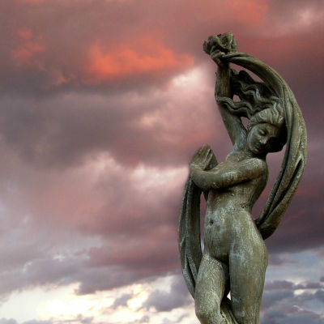
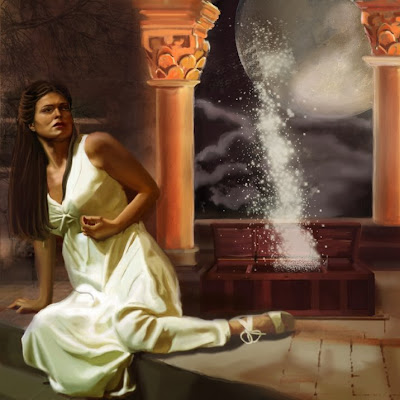
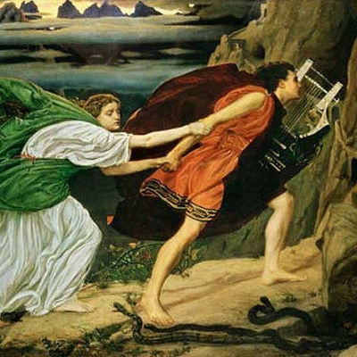
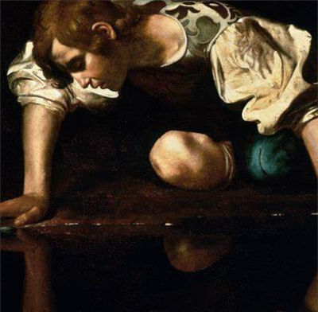

Características dos mitos
Tradicionalmente, os mitos possuem algumas características próprias e eram responsáveis por relatar a origem dos deuses e das coisas.
São narrativas que não possuem uma lógica rigorosa e utilizam-se de símbolos de fácil reconhecimento e compreensão. Nos mitos não há um limite definido entre o que é natural e o que é sobrenatural.
O surgimento do universo e dos elementos da natureza são os principais temas dos mitos. Para que todos possam compreender facilmente, utilizam-se da ideia de nascimento (gonos) das coisas. O nascimento é utilizado como dos principais símbolos presentes nos mitos por ser algo muito comum no cotidiano e simples de ser compreendido.
Desse modo, os relatos sobre a origem das coisas estão constantemente associados à ideia de um parto ou nascimento. Com isso, os mitos são repletos de relações entre os deuses que fazem nascer o universo e os elementos naturais.
Os mitos gregos que relatavam a origem das coisas podem ser divididos em duas categorias:
- Teogonia: narrativas sobre o nascimento dos deuses e seu poder.
- Cosmogonia: narrativas sobre o nascimento do universo e dos elementos da natureza.
Alguns exemplos de mitos
Caixa de Pandora
A Caixa de Pandora é um mito grego sobre a chegada da primeira mulher à terra (Pandora) e o surgimento de todos os males do mundo, como os vícios, as guerras e as doenças.
Segundo o mito, Pandora foi um instrumento da ira de Zeus contra Prometeu, que havia roubado o fogo divino para dar aos homens. Como punição, Zeus enviou a bela Pandora de presente ao irmão de Prometeu, Epimeteu. Contra todos os conselhos do irmão, Epimeteu aceitou o presente divino e casou-se com Pandora, com quem teve filhos.
Mas Pandora não veio só. Com ela, foi enviada uma caixa misteriosa que não deveria ser aberta em hipótese alguma. Certo dia, porém, cedendo à curiosidade, Pandora abriu a tampa da caixa, liberando todos os males do mundo. Quando se deu conta do erro que havia cometido, ela fechou a caixa. Mas lá dentro só havia restado a esperança.
Mito de Orfeu e Eurídice
Perdidamente apaixonados, Orfeu e Eurídice resolveram se casar. No entanto, pouco antes do casamento, Eurídice foi mordida por uma cobra, ao tentar fugir de um admirador, Aristeu, o que acarretou em sua morte.
Desconsolado, Orfeu resolveu descer ao mundo de mortos e pedir a Hades, deus dos mortos, e sua esposa Perséfone, sua amada de volta.
Comovidos com a história e extasiados com sua música de sua lira, ambos resolveram devolvê-la ao seu amante com uma condição: que não olhasse para seu ela até eles chegarem ao mundo superior.
Ao sair do mundo dos mortos, e desconfiado do acordo com o deus do mundo inferior, resolveu olhar para trás e conferir se sua amada o seguia. Ao desobedecer Hades e Perséfone, Eurídice foi levada ao mundo dos mortos, sem previsão de volta.
Mito de Narciso
De acordo com a mitologia grega, Narciso era filho da ninfa Liríope e do deus Cefiso. Quando nasceu, sua mãe consultou um oráculo para saber se seu filho viveria por muito tempo, já que sua beleza era fascinante.
O oráculo afirmou que ele viveria um longo tempo desde que não conhecesse sua própria imagem, pois, caso isso ocorresse, uma maldição cairia sobre Narciso, levando-o à morte.
Na vida adulta, Narciso virou caçador e atraía todos os olhares das moças e ninfas da região. Segundo o mito, mesmo sendo perseguido por várias mulheres, ele preferia ficar sozinho, pois acreditava que não havia encontrado a moça merecedora de seu amor.
Um dia, a ninfa Eco revelou sua ardente paixão a Narciso, mas ele não correspondeu. Revoltada, a ninfa recorreu Nêmesis, deusa da vingança.
Ela pediu à deusa que Narciso se apaixonasse intensamente por alguém, mas que jamais pudesse ter o amor correspondido. A maldição teve êxito, no entanto, ele se apaixonou pela sua própria imagem.
Eco era uma ninfa falante que viva acompanhando Narciso pelas matas sem que ele a notasse. Um dia, ela o atraiu até uma fonte de água.